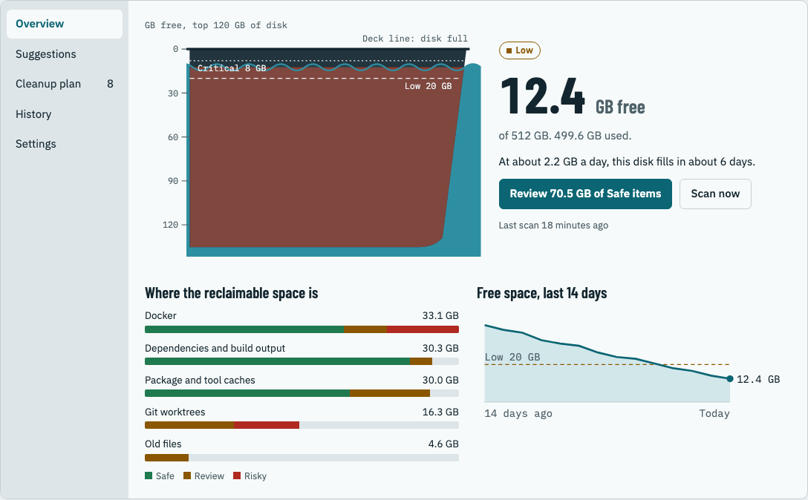
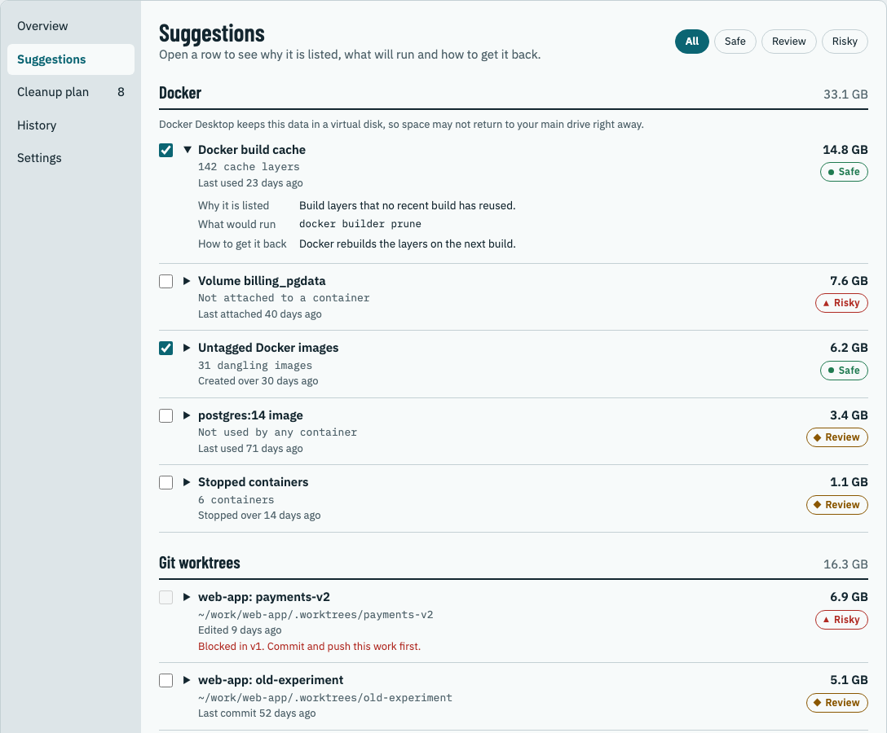
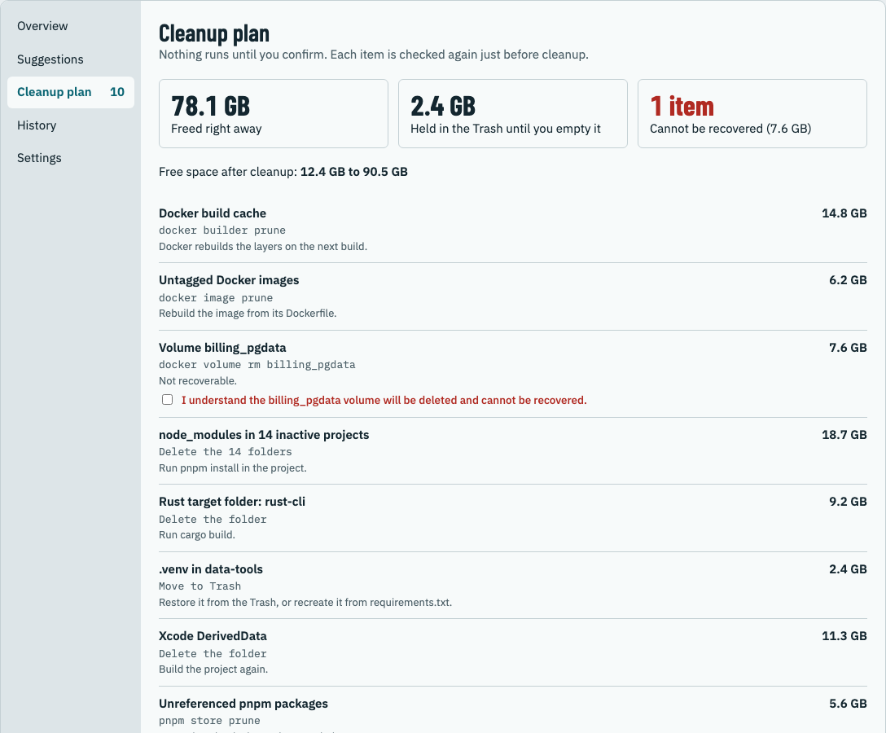

Free and open source · macOS, Windows and Linux
Know before your disk is full.
Freeboard watches your free space, warns you early, and shows what you can remove safely: Docker data, package caches, old dependencies and build output.
Preview release · about 3 MB on macOS

A quiet watch on your disk, a clear list when it gets tight.
Freeboard lives in the menu bar or system tray. It checks free space every five minutes and only speaks up when it matters.
Early warnings
One notification when you drop below your Low or Critical level, and a forecast of when the disk will fill at the current rate.
Developer clutter
Docker build cache, images, containers and volumes; npm, pnpm, pip, Cargo, Gradle and Homebrew caches; Xcode data; node_modules and build output in idle projects; old Git worktrees.
Every item explained
Why it is listed, the exact command or folder action that would run, and how to get it back.
Nothing runs on its own
You review a cleanup plan. Each item is checked again just before cleanup, and anything that changed is skipped.
Regenerable data: caches and build output that tools recreate when needed. Preselected.
Usually fine to remove, but worth a look: unused images, idle projects' dependencies, merged worktrees.
Cannot be recovered, such as Docker volumes. Never preselected; you confirm each one by name.


Built so it can't surprise you.
Safety rules come first, even over convenience. Freeboard never:
- Removes anything without a plan you confirmed.
- Touches system or application folders, your home folder's main folders, or
.ssh. - Deletes a repository root or anything inside
.git. - Follows symbolic links out of the folder being cleaned.
- Uses force flags, except Docker's own prune commands after you confirm.
- Sends your data anywhere. No account, no telemetry, no network calls.
Download
Free, MIT licensed. The latest release is listed on GitHub Releases, with SHA-256 checksums in SHA256SUMS.txt.
macOS
macOS 11 or later · Apple silicon and Intel
- Open the
.dmg, click Agree on the MIT license, and drag Freeboard to Applications. - Open Freeboard. macOS will say it can't check the app for malware, because this preview isn't notarized by Apple yet.
- Go to System Settings → Privacy & Security, scroll down and click Open Anyway. Or run:
xattr -dr com.apple.quarantine /Applications/Freeboard.app
Windows
Windows 10 or 11 · x64 or Arm
- Run the installer. It installs for your user only and doesn't need administrator rights.
- This preview isn't code-signed yet, so SmartScreen may say "Windows protected your PC". Click More info, then Run anyway.
- Freeboard lives in the notification area. If its icon is hidden, click the ^ arrow on the taskbar.
Linux
Ubuntu 22.04 or newer, Debian 12, or similar · x86_64 or arm64
.deb:sudo apt install ./Freeboard-linux-x86_64.deb
- AppImage:
chmod +x Freeboard-linux-x86_64.AppImage ./Freeboard-linux-x86_64.AppImage
- Tested on GNOME (with the AppIndicator extension that Ubuntu includes) and KDE Plasma.
Preview. Freeboard is new. Builds are not yet signed with an Apple Developer ID or a Windows code-signing certificate. Please report problems on GitHub Issues.